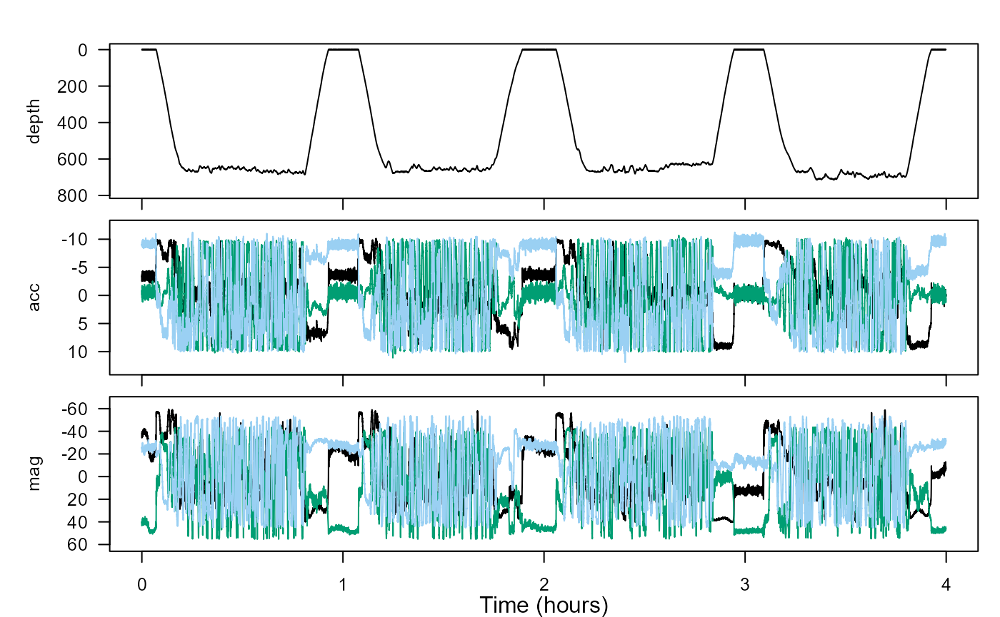
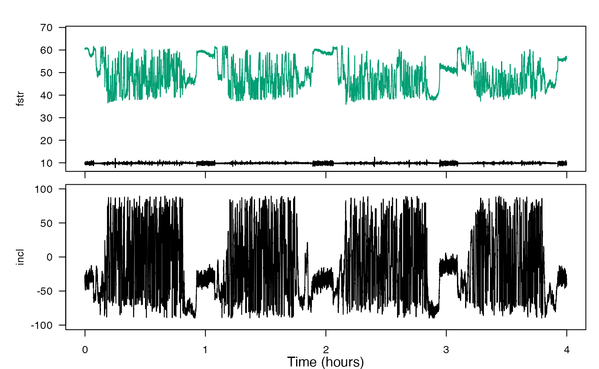
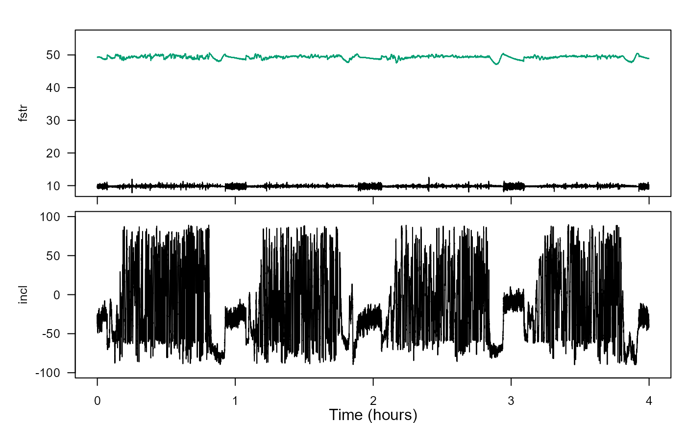

data-quality-error-correction.RmdWelcome to the data-quality-error-correction vignette! Thanks for taking some time to get to know our package. We hope you’re enjoying yourself.
This vignette deals with how to check data quality for accelerometers and magnetometers, as well as how to make corrections for some common sources of error.
Estimated time for this practical: 25 minutes
These vignettes assume that you have R/Rstudio installed on your machine, some basic experience working with them, and can execute provided code, making some user-specific changes along the way (e.g. to help R find a file you downloaded). We will provide you with quite a few lines. To boost your own learning, you would do well to try and write them before opening what we give, using this just to check your work.
Additionally, be careful when copy-pasting special characters such as _underscores_ and ‘quotes’. If you get an error, one thing to check is that you have just a single, simple underscore, and 'straight quotes', whether 'single' or "double" (rather than “smart quotes”).
Biologging data are not always ready-to-use when you read them off the tag. Some corrections may be needed. Quality checking is fairly easy for pressure data from aquatic mammals because we know they will breathe at the surface. Data from accelerometers and magnetometers are more difficult. For one thing, there are three axes, and also we don’t have such an intuitive feel for what they should look like. However, fortunately, there are some quality checks we can do with A and M data that help to catch and correct problems.
Our objective here is to estimate the orientation of an animal (its pitch, roll and heading) as a function of time. To do so we first need to check and correct errors in A and M.
For this practical we will use data from a tag attached to the back of a sperm whale. This dataset is built into the tagtools package, so you can access it using system.file.
library(tagtools)
sw_file_path <- system.file("extdata", "rawtestset3.nc", package = "tagtools", mustWork = TRUE)
sw <- load_nc(sw_file_path)Look at the overall structure to get an idea of how the data are stored, and check out the info structure to see where the data came from.
str(sw, max.level = 1)
sw$info#> [1] "results for `str(sw, max.level = 1)`:"
#> [1] "-------------------------------------"
#> List of 5
#> $ _empty:List of 1
#> $ P :List of 16
#> $ A :List of 18
#> $ M :List of 18
#> $ info :List of 36
#> - attr(*, "class")= chr [1:2] "animaltag" "list"
#> [1] "-------------------------------------"
#> [1] "and results for `sw$info`:"
#> [1] "-------------------------------------"
#> $depid
#> [1] "sw03_165a"
#>
#> $dtype_source
#> [1] "sw03_165aprh.mat,sw03_165aaud.txt"
#>
#> $dtype_datetime_made
#> [1] "18/07/2017 22:15:00"
#>
#> $dtype_nfiles
#> [1] "1"
#>
#> $dtype_format
#> [1] "MAT"
#>
#> $device_serial
#> [1] ""
#>
#> $device_make
#> [1] "DTAG"
#>
#> $device_type
#> [1] "Archival"
#>
#> $device_model
#> [1] "DTAG2"
#>
#> $device_url
#> [1] "https://www.soundtags.org"
#>
#> $sensors_firm
#> [1] "Not specified"
#>
#> $sensors_soft
#> [1] "Not specified"
#>
#> $sensors_list
#> [1] "3axis Accelerometer,3 axis Magnetometer,Pressure,Sound"
#>
#> $animal_id
#> [1] "Unknown"
#>
#> $animal_species_common
#> [1] "Sperm whale"
#>
#> $animal_species_science
#> [1] "Physeter macrocephalus"
#>
#> $animal_dbase_url
#> [1] "http://www.arkive.org/sperm-whale/physeter-macrocephalus/"
#>
#> $animal_dbase_itis
#> [1] "180488"
#>
#> $dephist_device_tzone
#> [1] "0"
#>
#> $dephist_device_regset
#> [1] "dd/mm/yyyy HH:MM:SS"
#>
#> $dephist_device_datetime_start
#> [1] "2003-06-14 18:38:35"
#>
#> $dephist_deploy_locality
#> [1] "northern Gulf of Mexico"
#>
#> $dephist_deploy_location_lat
#> [1] "28.48"
#>
#> $dephist_deploy_location_lon
#> [1] "-89.052"
#>
#> $dephist_deploy_datetime_start
#> [1] "2003-06-14 18:38:35"
#>
#> $dephist_deploy_method
#> [1] "Suction cups"
#>
#> $project_name
#> [1] "GOM 2003"
#>
#> $project_datetime_start
#> [1] "2003-06-03"
#>
#> $project_datetime_end
#> [1] "2003-06-24"
#>
#> $provider_name
#> [1] "Mark Johnson"
#>
#> $provider_details
#> [1] "Univ St Andrews"
#>
#> $provider_email
#> [1] "info@animaltags.org"
#>
#> $provider_license
#> [1] "Contact data provider"
#>
#> $provider_cite
#> [1] "Contact data provider"
#>
#> $provider_doi
#> [1] "Contact data provider"
#>
#> $creation_date
#> [1] "02-Dec-2019 16:14:58"Inspect the depth, acceleration and magnetometer data with plott:

Depth, sw$P, seems fine—it looks like a depth versus time plot for a diving whale. However, it is hard to see whether there are any problems with accelerometer and magnetometer data, sw$A and sw$M, from their respective plots. Two things can often go wrong with raw tag data:
A and M may not be aligned with the animal’s axes.Luckily, we can check both of these from the data.
When there is not much specific acceleration, the vector magnitude of each acceleration measurement should be close to the magnitude of the gravity vector, i.e., 9.8 \(\frac{m}{s^2}\).
The magnetometer data should also have fairly constant vector magnitude equal to the field strength where the data came from. It should be about 48 \(\mu\)T in this case since the tag was deployed at \(28.48^{\circ}\), \(-89.052^{\circ}\) latitude/longitude. (That is, \(28.48^{\circ}\) north latitude, \(89.052^{\circ}\) west longitude.)
(A useful website to find the geomagnetic field parameters, based on where your tag is deployed from, is: https://www.ngdc.noaa.gov/geomag-web/#igrfwmm.)
Finally, the angle between A and M should be close to the magnetic inclination angle, which is also locally constant, \(59^{\circ}\) in this case.
Use check_AM() to compute the field strength of A and M and their inclination angle. Recall that A is stored as sw$A and M is stored as sw$M, and write the result to a new object AMcheck or another similar name. Then check out what this object contains.
#> List of 2
#> $ fstr: num [1:71975, 1:2] 9.76 9.62 9.39 9.32 9.31 ...
#> $ incl: num [1:71975, 1] -0.655 -0.634 -0.62 -0.577 -0.529 ...You should be able to tell AMcheck is a list containing two vectors, AMcheck$fstr (field strength) and AMcheck$incl (inclination). Open the next code to see how we plott these.
sampling_rate <- sw$A$sampling_rate # get the sampling rate of A and M for plotting
# plott fstr, and incl (converting from radians to degrees)
plott(X = list(fstr = AMcheck$fstr, incl = AMcheck$incl*180/pi), fsx = sampling_rate)
The top plot shows the field strength of A and M. These should be close to 9.8 and 48, respectively, with little variation. If not, the acceleration or magnetometer data need re-calibration. Usually, the problem is with M and is due to stray magnetic fields in the tag. Fix this by doing a ‘hard-iron correction’, which the function fix_offset_3d can do.
Again, recall that M is stored within sw as sw$M. Write the result as an object Mf, then look at what Mf contains.
Mf <- fix_offset_3d(sw$M)
str(Mf, max.level = 1)#> List of 2
#> $ X:List of 19
#> $ G:List of 1This should show you that Mf is itself a list with two elements, Mf$X and Mf$G. Comparing Mf$G and Mf$X with sw$A,
#> [1] "----------------"
#> [1] "results for Mf$G"
#> [1] "----------------"
#> List of 1
#> $ poly: num [1:3, 1:2] 1 1 1 9.64 -5.58 ...
#> [1] "----------------"
#> [1] "results for Mf$X"
#> [1] "----------------"
#> List of 19
#> $ data : num [1:71975, 1:3] -28.6 -28.1 -27.4 -26.6 -25.6 ...
#> $ sampling : chr "regular"
#> $ sampling_rate : num 5
#> $ sampling_rate_unit: chr "Hz"
#> $ depid : chr "sw03_165a"
#> $ creation_date : chr "07-Aug-2017 15:32:56"
#> $ history : chr "fix_offset_3d"
#> $ type : chr "mag"
#> $ full_name : chr "Magnetometer"
#> $ description : chr "triaxial magnetometer"
#> $ unit : chr "uT"
#> $ unit_name : chr "micro Tesla"
#> $ unit_label : chr "\\muT"
#> $ start_offset : num 0
#> $ start_offset_units: chr "second"
#> $ column_name : chr "x,y,z"
#> $ frame : chr "sensor"
#> $ axes : chr "FRU"
#> $ cal_poly : num [1:3, 1:2] 1 1 1 9.64 -5.58 ...
#> [1] "----------------"
#> [1] "results for sw$A"
#> [1] "----------------"
#> List of 18
#> $ data : num [1:71975, 1:3] -3.49 -3.32 -3.04 -2.89 -2.73 ...
#> $ sampling : chr "regular"
#> $ sampling_rate : num 5
#> $ sampling_rate_unit: chr "Hz"
#> $ depid : chr "sw03_165a"
#> $ creation_date : chr "07-Aug-2017 15:32:56"
#> $ history : chr "sens_struct,decdc(5)"
#> $ type : chr "acc"
#> $ full_name : chr "Acceleration"
#> $ description : chr "triaxial acceleration"
#> $ unit : chr "m/s2"
#> $ unit_name : chr "meters per seconds squared"
#> $ unit_label : chr "m/s^2"
#> $ start_offset : num 0
#> $ start_offset_units: chr "second"
#> $ column_name : chr "x,y,z"
#> $ frame : chr "tag"
#> $ axes : chr "FRU"you’ll notice that Mf$X and sw$A structures contain the same kind of data. Hence Mf$X can stand in for sw$M (Mf by itself cannot). So, try and re-run check_AM() with sw$A and Mf$X to see if the field strength has improved.
AMcheck2 <- check_AM(sw$A, Mf$X)
plott(X = list(fstr = AMcheck2$fstr, incl = AMcheck2$incl*180/pi), fsx = sampling_rate)
If all has gone well, your field strength should be pretty constant at right around 48 \(\mu\)T. Is it? Great work!
Now look again at the inclination angle (bottom plot). Chances are, it doesn’t look consistently close to \(59^{\circ}\). Therefore, we need to do the next step…
If the field strength is okay for A and M but the inclination angle is wrong, this is a strong indication that the magnetometer and accelerometer axes don’t match. Assuming that the accelerometer axes are correct, I found by trial and error that the magnetometer axes are mapped as follows:
| Sensor.axis | Tag.axis |
|---|---|
| x | -x |
| y | z |
| z | y |
You could make these corrections to Mf one-by-one, but it is probably more convenient to do them all at once. To make this happen, define a ‘map’ matrix that summarizes the changes:
#> [,1] [,2] [,3]
#> [1,] -1 0 0
#> [2,] 0 0 1
#> [3,] 0 1 0Use function rotate_vecs() to apply Map to Mf$X and make a new ‘tag frame’ data structure:
Mt <- rotate_vecs(Mf$X,Map)Mt is now oriented in the tag’s frame of reference. Add this important information about Mt into the structure Mt:
Mt$frame <- 'tag'
Mt$sensor_map <- Map # save the Map matrix too
str(Mt, max.level = 1)#> List of 20
#> $ data : num [1:71975, 1:3] 28.6 28.1 27.4 26.6 25.6 ...
#> $ sampling : chr "regular"
#> $ sampling_rate : num 5
#> $ sampling_rate_unit: chr "Hz"
#> $ depid : chr "sw03_165a"
#> $ creation_date : chr "07-Aug-2017 15:32:56"
#> $ history : chr "fix_offset_3d"
#> $ type : chr "mag"
#> $ full_name : chr "Magnetometer"
#> $ description : chr "triaxial magnetometer"
#> $ unit : chr "uT"
#> $ unit_name : chr "micro Tesla"
#> $ unit_label : chr "\\muT"
#> $ start_offset : num 0
#> $ start_offset_units: chr "second"
#> $ column_name : chr "x,y,z"
#> $ frame : chr "tag"
#> $ axes : chr "FRU"
#> $ cal_poly : num [1:3, 1:2] 1 1 1 9.64 -5.58 ...
#> $ sensor_map : num [1:3, 1:3] -1 0 0 0 0 1 0 1 0Check the field strength and inclination of sw$A and Mt once more. Try and do this on your own, then check your work with the code below: write a new object, perhaps AMcheck3, with the result of check_AM on sw$A and Mt. Then use your new object AMcheck3 in place of AMcheck2 to get the same two plots, but with the newly corrected data.
AMcheck3 <- check_AM(sw$A, Mt)
plott(X = list(fstr = AMcheck3$fstr, incl = AMcheck3$incl*180/pi), fsx = sampling_rate)Are we good? Bear in mind that the inferred inclination angle from accelerometer and magnetometer data is usually a bit noisy so don’t expect incl to be exactly on the expected inclination angle. It should get pretty close, though (around \(59^{\circ}\)).
When you are comfortable that the data pass the quality checks, save them to a new NetCDF file:
The corrections that you made to get Mt are stored in its structure so this information will also be saved automatically in your nc file - verify this by showing the contents of Mt.
str(Mt)#> List of 20
#> $ data : num [1:71975, 1:3] 28.6 28.1 27.4 26.6 25.6 ...
#> $ sampling : chr "regular"
#> $ sampling_rate : num 5
#> $ sampling_rate_unit: chr "Hz"
#> $ depid : chr "sw03_165a"
#> $ creation_date : chr "07-Aug-2017 15:32:56"
#> $ history : chr "fix_offset_3d"
#> $ type : chr "mag"
#> $ full_name : chr "Magnetometer"
#> $ description : chr "triaxial magnetometer"
#> $ unit : chr "uT"
#> $ unit_name : chr "micro Tesla"
#> $ unit_label : chr "\\muT"
#> $ start_offset : num 0
#> $ start_offset_units: chr "second"
#> $ column_name : chr "x,y,z"
#> $ frame : chr "tag"
#> $ axes : chr "FRU"
#> $ cal_poly : num [1:3, 1:2] 1 1 1 9.64 -5.58 ...
#> $ sensor_map : num [1:3, 1:3] -1 0 0 0 0 1 0 1 0Your processing steps are listed in the ‘history’ field and so are traceable as you would expect in a professional archive.
What have you learned? A few powerful tools for detecting and correcting common errors in raw data.
Great work! You’ve completed this vignette.
If you’d like to continue working through these vignettes, tag-to-whale-frame is probably a good option. It deals with estimating and correcting the orientation of a tag on an animal. This vignette will use tag data that are not aligned to the animal’s body axes, e.g., because the tag was applied to a free-moving whale.
Animaltags home pages: http://animaltags.org/ (old), https://animaltags.netlify.app/ (new), https://github.com/stacyderuiter/TagTools (for source code)